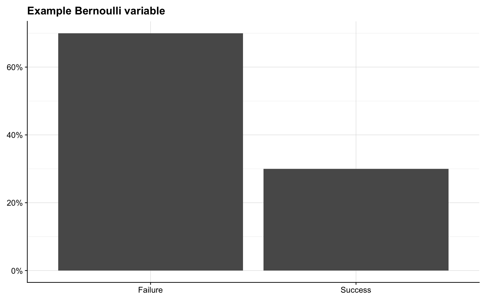

Survival Analysis (LÝÐ079F)
Preface
The Book
These lecture notes are based on the book Modelling Survival Data in Medical Research by David Collett

Software
We will primarily be writing R code using the RStudio GUI.
Setup in RStudio
This is our base setup. Further packages will be loaded in the individual lectures respectively.
Some Probability Distributions
Discrete
Bernoulli
A random variable \(X\) is said to have the Bernoulli distribution with parameter \(p\) if
\[ \begin{aligned} P(X=1) &= p, \quad \text{and} \\ P(X=0) &= 1 - p, \quad \text{where } 0 < p < 1. \end{aligned} \]
We write this as \(X \sim \mathrm{Bern}(p)\). All random variables whose possible values are \(0\) and \(1\) follow this distribution.
p <- 0.3
success <- p
failure <- 1 - p
tibble(outcome = c("Success", "Failure"),
probability = c(success, failure)) %>%
ggplot(aes(outcome, probability)) +
geom_col() +
scale_y_continuous(labels = percent) +
labs(title = "Example Bernoulli variable") +
theme(axis.title = element_blank())
Binomial
Suppose that we have n independent Bernoulli random variables sampled from an experiment, each with the same probability, \(p\), of success. Let \(X\) be the number of successes. Then \(X\) has a Binomial distribution with parameters \(n\) and \(p\). We write \(X \sim \mathrm{Bin}(n, p)\). Thus the \(\mathrm{Bern}(p)\) distribution is the same as \(\mathrm{Bin}(1, p)\).
coin_tosses <- 100
possible_outcomes <- seq(0, 100)
probability_of_outcomes <- dbinom(x = possible_outcomes, size = coin_tosses, prob = 0.5)
tibble(outcome = possible_outcomes,
probability = probability_of_outcomes) %>%
ggplot(aes(outcome, probability)) +
geom_col() +
scale_y_continuous(labels = percent) +
labs(title = "Coin toss experiment",
subtitle = "Probability of obtaining X heads in 100 tosses") +
theme(axis.title = element_blank())
Geometric
Consider a sequence of independent Bernoulli trials, each with the same success probability, \(p\), and imagine performing trials until a success occurs. Let \(X\) be the number of failures before the first successful trial. Then \(X\) has the Geometric distribution with parameter \(p\), denoted by \(X \sim \mathrm{Geom}(p)\).
This is an important distribution for survival analysis. Imagine that on each day there is a constant probability, \(p\), that some event happens. Then the number of days before the event happens follows a \(\mathrm{Geom}(p)\) distribution. Note that the Geometric distribution only models whole numbers, so we cannot wait for \(4.5\) days when working with this distribution.
Textbooks and statistical software differ in whether the Geometric distribution models the number trials before the success or the number of trials including the success. The number of trials including the success is sometimes called the First Success distribution.
risk <- 0.10
possible_times <- seq(0, 50)
probability_of_times <- dgeom(possible_times, risk)
tibble(time = possible_times,
probability = probability_of_times) %>%
ggplot(aes(time, probability)) +
geom_col() +
scale_y_continuous(labels = percent) +
labs(title = "Geometic experiment",
subtitle = "Probability of waiting X days until event happens with risk 10%") +
theme(axis.title = element_blank())
Continuous
For continuous variables it makes no sense to ask what is the probability that X will be equal to x? since that probability, \(P(X = x)\) is always \(0\). Consider the probability that the temperature outside is 23 degrees celsius. This probability is \(0\) since the temperature outside is never exactly 23 degrees, rather it might be 23.01231 or 22.999923, but it is never exactly 23. Instead of the probability that a continuous random variable equals some value we talk of the density of the distribution at that value.
On the other hand we can talk about the probability that a continuous random variable, \(X\), is less than or equal to \(x\) or \(P(X \leq x)\). Thus we can ask what is the probability that the temporature outside is less than or equall to 23? or \(P(\mathrm{Temp} \leq 23)\).
Exponential
The Exponential distribution is the continuous counterpart to the Geometric distribution. Instead of waiting for events in discrete days we are now waiting in continuous time for a success that occurs with rate \(\lambda\) per unit of time. The average number of successes in a time interval of length \(t\) is \(\lambda t\), though the actual number of successes varies.
If \(X\) has an Exponential distribution we write \(X \sim \mathrm{Expo}(\lambda)\), and the probability that an event occurs within \(x\) units of time is equal to the probability that \(X\) is less than or equal to \(x\), or
\[ P(X \leq x) =F(x) = 1 - e^{-\lambda x}. \]
In survival analysis this is often called the risk function. The survivor function is the probability that an event has not occurred within \(x\) units of time, and for an Exponential random variable it is written
\[ P(X > x) = S(x) = 1 - (1 - e^{-\lambda x}) = e^{-\lambda x}. \]
The Exponential distribution is unique in that it is memoryless. This means that the time until an event occurs is independent of how long you have been waiting for it to happen. It is obvious that the time until your bus arrives is not exponentially distributed since the waiting time is not the same whether you have waited \(0\), \(5\) or \(15\) minutes (although sometimes it may feel that way!). Waiting times that are not memoryless are better modeled with other distributions.
rate <- 0.1
possible_times <- seq(0, 50)
density_of_times <- dexp(possible_times, rate)
tibble(time = possible_times,
density = density_of_times) %>%
ggplot(aes(time, density)) +
geom_area(fill = "grey30") +
labs(title = "Exponential experiment: Density",
subtitle = "Density of waiting X amount of time until event happens with rate 0.1 per unit of time.\nSince an exponential waiting time can take on any values we don't see a step function but a smooth curve.") +
theme(axis.title = element_blank())
rate <- 0.1
possible_times <- seq(0, 50)
risk_function <- pexp(possible_times, rate)
tibble(time = possible_times,
risk = risk_function) %>%
ggplot(aes(time, risk)) +
geom_area(fill = "grey30") +
scale_y_continuous(labels = percent) +
labs(title = "Exponential experiment: Risk function",
subtitle = "Probability of waiting X OR LESS amount of time until event happens with rate 0.1 per unit of time.") +
theme(axis.title = element_blank())
rate <- 0.1
possible_times <- seq(0, 50)
survival_function <- 1 - pexp(possible_times, rate)
tibble(time = possible_times,
survival = survival_function) %>%
ggplot(aes(time, survival)) +
geom_area(fill = "grey30") +
scale_y_continuous(labels = percent) +
labs(title = "Exponential experiment: Survival function",
subtitle = "Probability of waiting MORE THAN X amount of time until event happens with rate 0.1 per unit of time.") +
theme(axis.title = element_blank())Weibull
Remarkably, simply raising an exponential random variable to a power dramatically improves the flexibility and applicability of the distribution. Let \(X \sim \mathrm{Expo}(\lambda)\) and \(T = X^{1/\gamma}\) with \(\lambda > 0\), \(\gamma > 0\).
The distribution of \(T\) is called the Weibull distribution and we denote this by \(T \sim \mathrm{Weib}(\lambda, \gamma)\). We see that if \(\gamma = 1\) then \(T\sim \mathrm{Weib}(\lambda, 1) = \mathrm{Expo}(\lambda)\).
It is interesting to note that if \(T = X^{1/\gamma}\) then \(X = T^{\gamma}\). Thus, if you have a random variable \(T\sim \mathrm{Weib}(\lambda, \gamma)\), then \(T^\gamma \sim \mathrm{Expo}(\lambda)\), and so \(T^\gamma\) is memoryless, which can be used to examine whether \(T\) is actually Weibull distributed.
The risk function for a Weibull random variable is
\[ P(T \leq t) = F(t) = 1 - e^{\lambda t^{\gamma}} \]
and the survivor function is
\[ P(T > t) = S(t) = e^{\lambda t^\gamma}. \]
The Weibull distribution is not memoryless.
rate <- 0.1
shape <- 2
possible_times <- seq(0, 50, length.out = 1000)
density_of_times <- dweibull(possible_times, shape = shape, scale = 1 / rate)
tibble(time = possible_times,
density = density_of_times) %>%
ggplot(aes(time, density)) +
geom_area(fill = "grey30") +
labs(title = "Weibull experiment: Density",
subtitle = "Density of waiting X amount of time until event happens with rate 0.1 per unit of time and shape parameter 2.\nThis means that the square root of the survival time follows an exponential distribution") +
theme(axis.title = element_blank())rate <- 0.1
shape <- 2
possible_times <- seq(0, 50, length.out = 1000)
density_of_times <- pweibull(possible_times, shape = shape, scale = 1 / rate)
tibble(time = possible_times,
density = density_of_times) %>%
ggplot(aes(time, density)) +
geom_area(fill = "grey30") +
scale_y_continuous(labels = percent) +
labs(title = "Weibull experiment: Risk function",
subtitle = "Probability of waiting X OR LESS amount of time until event happens with rate 0.1 per unit of time and shape parameter 2.\nThis means that the square root of the survival time follows an exponential distribution") +
theme(axis.title = element_blank())rate <- 0.1
shape <- 2
possible_times <- seq(0, 50, length.out = 1000)
density_of_times <- 1 - pweibull(possible_times, shape = shape, scale = 1 / rate)
tibble(time = possible_times,
density = density_of_times) %>%
ggplot(aes(time, density)) +
geom_area(fill = "grey30") +
scale_y_continuous(labels = percent) +
labs(title = "Weibull experiment: Survivor function",
subtitle = "Probability of waiting MORE THAN X amount of time until event happens with rate 0.1 per unit of time and shape parameter 2.\nThis means that the square root of the survival time follows an exponential distribution") +
theme(axis.title = element_blank())